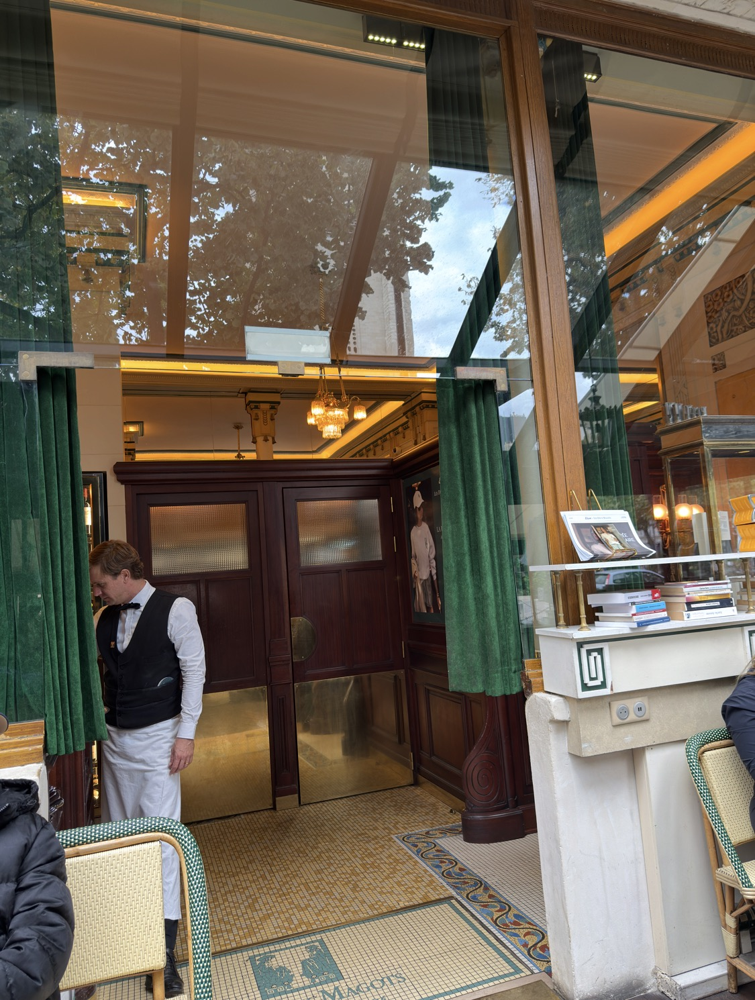
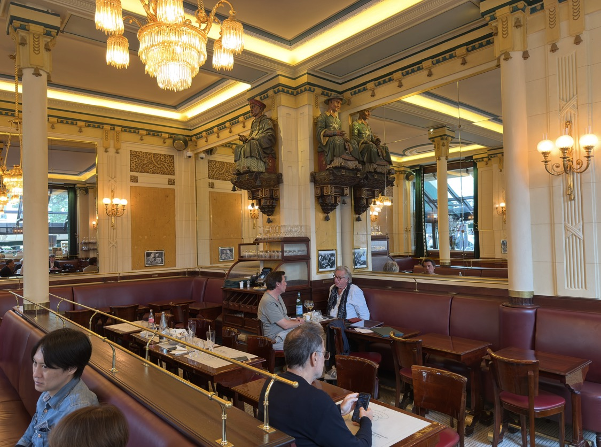
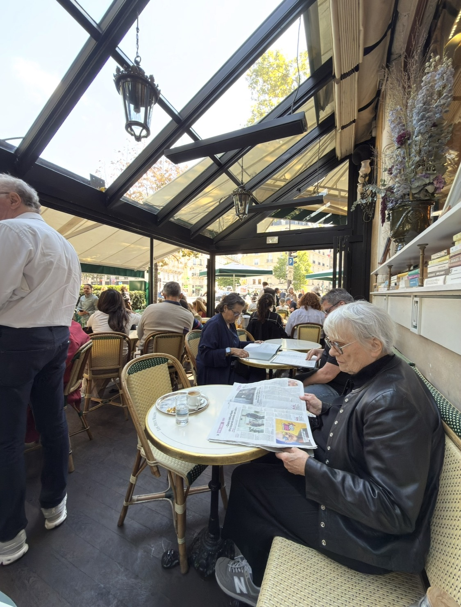
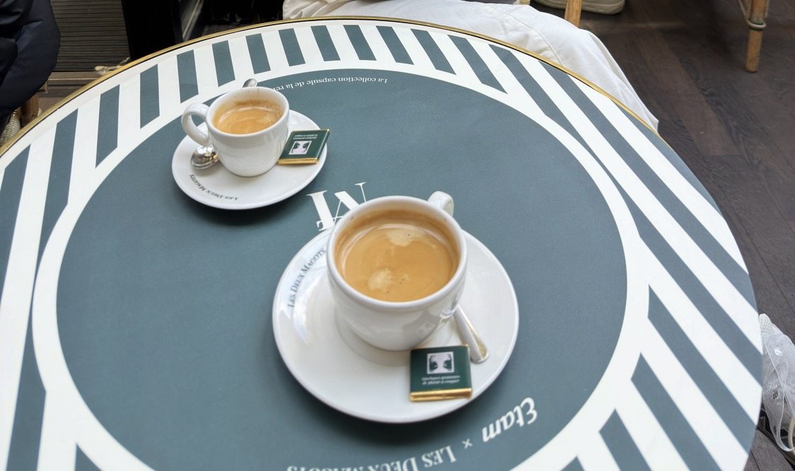
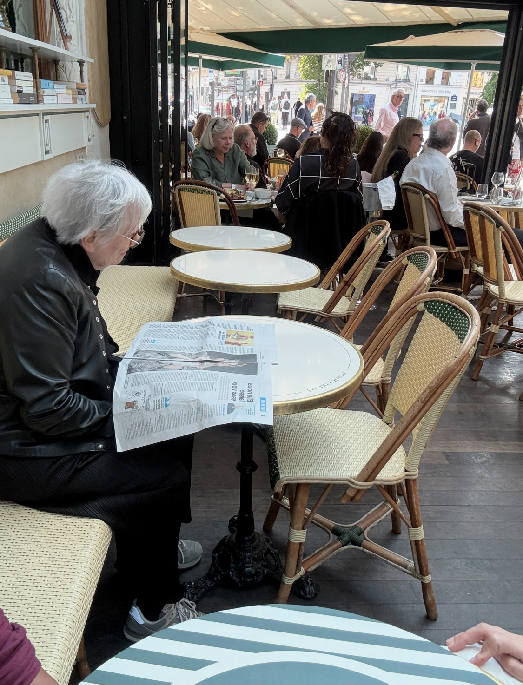
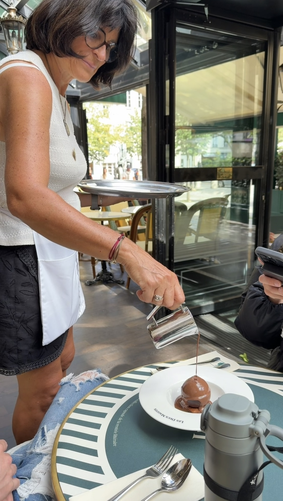

大約三十年前，我曾經看過一本書，名字叫做《叫咖啡的地方》。
那時候的我，離巴黎很遠。網路還沒有把世界壓縮成幾下搜尋、幾張照片就能抵達的距離，一間遠方的咖啡館，真的是存在於書頁、想像與某種說不太清楚的嚮往裡。也是從那本書開始，我知道了巴黎有一個地方叫「雙叟」。
後來喝的咖啡愈來愈多，接觸的器材、豆子、沖煮方式也愈來愈深；咖啡慢慢從興趣變成一種觀看世界的方法。可是「雙叟」一直沒有消失。它不像待辦清單裡的一個景點，更像一個被擱在很遠地方的座標：也許有一天，我會真的走到那裡。
有些地方，在抵達以前就已經陪了你很久。

不是打卡，是赴約
這次到法國，我終於走進聖日耳曼德佩。看見綠色棚架、藤編座椅、白色桌面，再看見門內那一套深色木作、黃銅與暖黃燈光，我心裡第一個浮出的感覺並不是「名店」，而是：我來了。
那一刻很像赴一場遲到了三十年的約。
雙叟在 1884 年由原來的商店轉為咖啡館，之後成為聖日耳曼德佩重要的文學咖啡館之一。Verlaine、Rimbaud、Mallarmé、Apollinaire，到後來的 Sartre、Simone de Beauvoir、Hemingway，都曾讓這些桌椅不只是桌椅。1933 年創設的 Prix des Deux Magots，也讓「咖啡館」與文學之間的關係有了更具體的形狀。
我知道，今天的雙叟早已不可能是 Sartre 與 Beauvoir 那個年代的雙叟。觀光客來了，手機來了，世界也換了一種速度。可是坐進去之後，我反而覺得這才是咖啡館真正有趣的地方：它不是博物館。
咖啡館之所以活著，就因為每一個年代的人都還願意坐下來。有人讀報、有人交談、有人吃午餐、有人只是喝一杯咖啡；服務生在桌與桌之間穿梭，街上的人流從露台外經過。歷史沒有停住，新的日常只是繼續疊在舊的日常上。


那杯咖啡，忽然變得很安靜
真的坐上位子以後，我才發現自己沒有想像中興奮地四處張望。反而有一點安靜。
白瓷杯放到桌上，旁邊是小銀匙，桌面的綠、白與金色線條在眼前。從專業咖啡的角度，我當然可以去注意萃取、風味、杯感；可是那一天，這些判斷忽然都退到了第二層。

我喝的其實不只是一杯咖啡。
我喝的是三十年前翻過那本書的自己；是這些年一路累積下來對咖啡館、咖啡文化、器物與人的興趣；也是一個曾經只能從書裡想像巴黎的人，終於真的坐到了這張桌子旁。
因此真正讓我感動的，不是「我來過一間很有名的店」，而是某一段很長的時間，在那一刻忽然接了起來。
咖啡館，是讓時間有地方坐下來
我愈來愈覺得，一間重要的咖啡館真正留下來的，從來不只是配方與菜單。它留下的是人怎麼使用一個地方。
有人在這裡寫作，有人在這裡爭論，有人在這裡談戀愛，有人在這裡看報紙；也有人像我一樣，隔了三十年才從書頁走進現場。咖啡只是讓人願意停留的理由之一，而停留本身，才慢慢累積成文化。

那天桌上還有甜點，服務人員俐落地把巧克力淋下。周圍很熱鬧，巴黎照常運作，我也沒有突然變成某部電影裡的人物。可是這反而很好。

因為真正的朝聖，不是把一個傳說供起來，而是終於讓自己成為那個地方某一天、某一張桌子旁，非常普通的一位客人。
三十年前，我在一本書裡遇見雙叟。三十年後，我坐在這裡喝完了一杯咖啡。
離開時，我沒有覺得一個願望被「完成」了。比較像是那個一直留在遠方的地方，從此終於有了自己的溫度、光線、聲音，以及我確實坐過的位置。